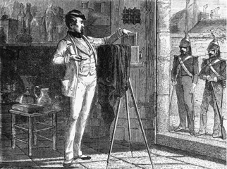

El primer procedimiento fotográfico o heliográfico fue inventado por Niépce hacia 1824. Las imágenes eran obtenidas con betún de Judea, extendido sobre una placa de plata, luego de un tiempo de exposición de varios días. En 1829, Niépce asocia a Louis Jacques Mandé Daguerre en sus investigaciones. En 1832, ponen a punto, a partir del residuo de la destilación de la esencia de lavanda, un segundo procedimiento que produce imágenes con un tiempo de exposición de un día entero.
Niépce muere en 1833. Daguerre continúa trabajando solo e inventa, en 1838, el daguerrotipo, primer procedimiento que comprende una etapa de revelado. Una placa de plata recubierta de una fina capa de ioduro de plata era expuesta en la cámara oscura y luego sometida a la acción de vapores de mercurio que provocaban la aparición de la imagen latente invisible, formada en el curso de la exposición a la luz. Este revelado consistía en una gran amplificación del efecto de la luz, con lo cual el tiempo de exposición no pasaba de los 30 minutos. El fijado era obtenido por inmersión en agua, saturada de sales marinas.
En julio de 1839, otro francés, Hippolyte Bayard, descubre el medio de obtener imágenes positivas directamente sobre papel. Un papel recubierto de cloruro de plata era oscurecido a la luz y luego expuesto en la cámara oscura después de haber sido impregnado en Ioduro de plata. El tiempo de exposición era de treinta minutos a dos horas.
Siempre en 1839, el anuncio del invento del daguerrotipo incitó al inglés William Henry Fox Talbot a retomar las investigaciones interrumpidas cuyos comienzos remontaban a 1834. En 1841, patentó el calotipo, primer procedimiento negativo/positivo que permitía la multiplicación de una misma imagen gracias a la obtención de un negativo intermediario sobre un papel al cloruro de plata, vuelto translúcido gracias a la cera. Como con el daguerrotipo, la imagen latente era revelada luego, por medio de un producto químico, el revelador: una solución de ácido gálico y de nitrato de plata. Una segunda hoja de papel recubierta también de cloruro de plata era mas tarde expuesta a través del negativo translúcido, para dar el positivo final.
 En 1839 se le debe a John Herschell el descubrimiento del medio para fijar las imágenes, sumergiéndolas en un baño de hiposulfito de sodio, el mismo componente esencial de los fijadores fotográficos actuales. Las ventajas del calotipo reposaban principalmente en la facilidad de la manipulación de las copias sobre papel y de la posibilidad de reproducción múltiple. En revancha, la definición , limitada por la presencia de las fibras del papel negativo, no podía rivalizar con el daguerrotipo.
Para reducir aún más el tiempo de exposición, se crearon objetivos de focales cortas, mas luminosos, por lo tanto, conservando la nitidez en toda la imagen. En 1841, el físico Fizeau reemplazó el ioduro de plata por el bromuro de plata cuya sensibilidad a la luz es muy superior. Nada más que algunos segundos de exposición eran suficientes para obtener un daguerrotipo. Entonces tomar retratos se volvía posible.
Con el fin de mejorar la transparencia del calotipo negativo, Abel Niépce de Saint Victor, primo de Niépce, descubrió en 1847 la forma de reemplazar el papel por el vidrio. Para que el bromuro de plata pueda adherirse al vidrio, tuvo la idea de mezclarlo con la albúmina (el blanco del huevo). Aunque un poco contrastadas, la imágenes se volvieron extremadamente precisas, obligando a los ópticos a poner a punto objetivos aún mas eficientes.